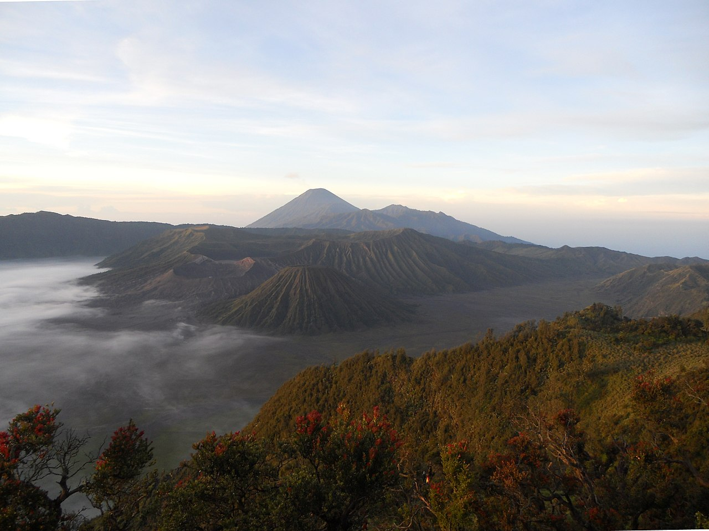
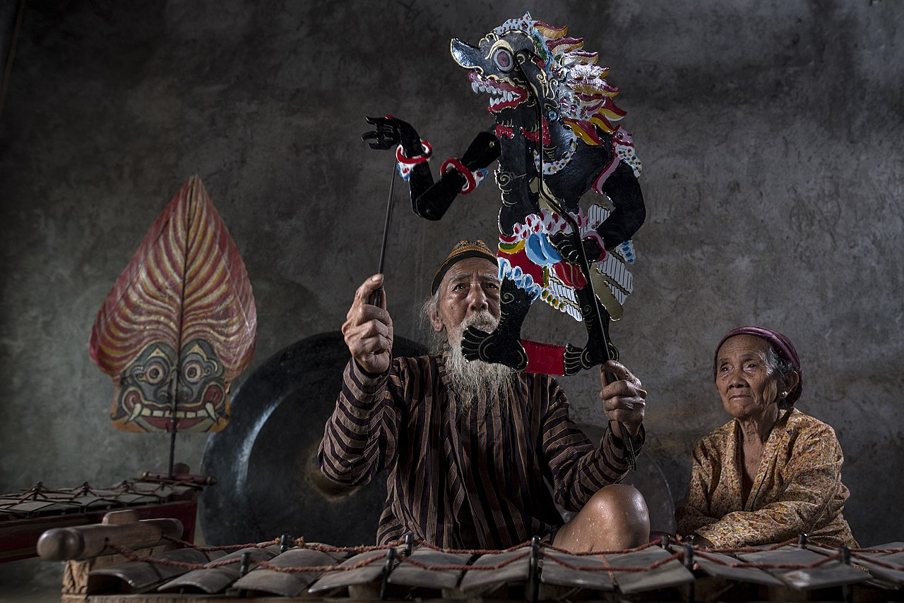
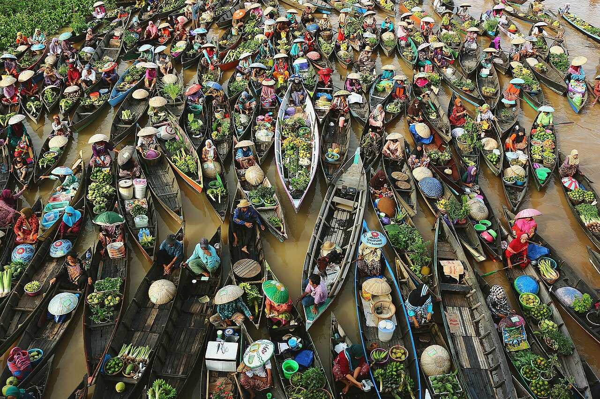

Top Attractions
Must-See in Java

Borobudur Temple
The world's largest Buddhist temple, built in the 9th century. Sunrise tickets ($25) include entry to the upper tiers.

Prambanan Temple
Indonesia's largest Hindu temple complex, dedicated to Trimurti. Stunning at sunset. Combined ticket with Borobudur available.

Mount Bromo
The most iconic volcano view in Indonesia. Jeep tours start at $30. Best viewed at sunrise from Penanjakan viewpoint.

Yogyakarta
Java's cultural soul. Visit the Sultan's Palace (Kraton), watch Wayang Kulit shadow puppets, and explore Jalan Malioboro.

Jakarta
The bustling capital. Explore Kota Tua (Old Town), the National Monument, and the vibrant street food scene.

Kawah Ijen
Home to the famous "blue fire" phenomenon. Night trek to see sulfur miners at work. Guided tours from $40.